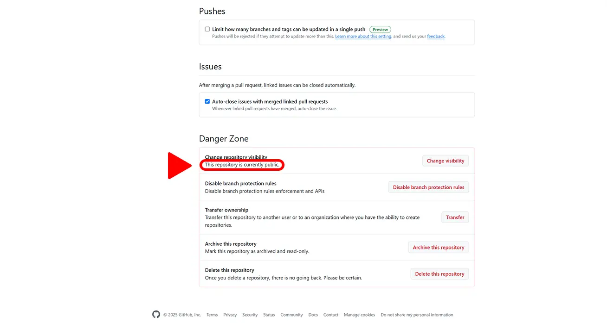

Tässä osiossa käydään läpi repositorion näkyvyyden muuttaminen,
käyttäjien (collaborators) lisääminen, haarojen suojaaminen (branch protection rules), sekä repositorion poistaminen.
Lisäksi
tutustutaan muutamiin hyödyllisiin perusasetuksiin,
kuten oletushaaran uudelleen nimeäminen ja vaihtaminen, sekä projektin
kuvauksen lisääminen.
GitHub-repositorion muuttaminen julkiseksi (Public)
tuo koko sen
sisällön ja koko commit-historian nimensä
mukaisesti
julkisesti nähtäville. Tämä koskee myös aiemmin repositoriossa olleita,
mutta sittemmin poistettuja tiedostoja ja tietoja.
Älä muuta repositoriota julkiseksi, jos se
sisältää tai on joskus sisältänyt arkaluontoisia
tietoja, kuten
Salasanoja, API-avaimia tai käyttöoikeus-tunnuksia
Henkilötietoja tai muuta luottamuksellista aineistoa
Maksullisia tai lisenssi-suojattuja tiedostoja
Ei kuitenkaan tarvitse pelätä, että repositorio muuttuisi vahingossa
julkiseksi, sillä GitHub vaatii muutokseen useita varmistuksia, jotka
käymme läpi seuraavaksi.
Varmista, että olet osiossa General ja
vieritä ikkunan alareunaan
Repositorion asetusten General-osio
Klikkaa Danger Zone osiosta Change VisibilityRepositorion näkyvyyden muuttaminen
Klikkaa alle avautuvaa Change to publicRepositorion muuttaminen julkiseksi
Vahvista vielä avautuvaan ruutuun, että haluat tehdä repositoriosta
julkisen klikkaamalla
I want to make this repository public Vahvistus repositorion muuttamisesta julkiseksi
Vahvista vielä, että olet ymmärtänyt mitä repositorion julkiseksi
muuttaminen tarkoittaa
klikkaamalla
I have read and understand these effects
Vahvistusikkuna repositorion julkiseksi muuttamisesta
Tee repositoriosta julkinen klikkaamalla
Make this repository publicTee repositoriosta julkinen viimeistely
Mikäli käytössä on kaksivaiheinen tunnistautuminen vahvista vielä
käyttöoikeutesi syöttämällä tunnistautumissovelluksesi antama
avain ja klikkaamalla VerifyKäyttöoikeuden vahvistus
Tarkista, että repositorion näkyvyys päivittyi julkiseksi
(Public)

Repositorion näkyvyys
Repositorion näkyvyyttä voi muuttaa takaisin yksityiseksi
(Private), samalla kaavalla. Muista kuitenkin, että jos
repositorio on ollut julkinen, muut käyttäjät ovat voineet ladata tai
kloonata sen. Nämä kopiot jäävät heille näkyvyyden muutoksesta
huolimatta.
Siirry repositorion käyttäjä asetuksiin klikkaamalla
Collaborators
-osiota
Repositorion asetukset (päänäkymä)
Mikäli käytössä on kaksivaiheinen tunnistautuminen vahvista vielä
käyttöoikeus syöttämällä
tunnistautumissovelluksen antama
avain ja klikkaamalla VerifyKäyttöoikeuden vahvistus
Lisää käyttäjä klikkaamalla Add people
Repositorion käyttäjäasetukset
Etsi lisättävä käyttäjä avautuvasta ruudusta syöttämällä
kenttään käyttäjän nimi, nimimerkki
tai
sähköpostiosoite ja valitse
käyttäjä alle avautuvasta listastaLisättävän käyttäjän etsiminen
Vahvista käyttäjän lisääminen klikkaamalla
Add käyttäjänimiValitun käyttäjän lisäämisen vahvistus
Tarkista käyttäjälle lähetetty kutsu
Kutsuttu käyttäjä repositorion asetuksissa
Kutsun hyväksyminen käyttäjän toimesta
Klikkaa Inbox-ikonia oikealta yläreunasta
Käyttäjälle tulleet viestit löytyvät inbox-kuvaketta
klikkaamalla
Avaa kutsu klikkaamalla uutta ilmoitustaNäkymä käyttäjälle tulleista ilmoituksista
Tarkista, että käyttäjä on lisätty onnistuneesti
Lisätty käyttäjä repositorion asetuksissa
Repositorion poistaminen (Delete this repository) on
pysyvä toimenpide. Kun poistat repositorion kaikki sen
tiedostot, commit-historia, asetukset katoavat pysyvästi, eikä niitä voi
palauttaa GitHubin kautta.
Älä poista repositoriota, jos sen sisältöä tai historiaa saatetaan
tarvita myöhemmin. Turvallisempi vaihtoehto on muuttaa se ensin
Private-tilaan.
Jos haluat varmistaa, että sinulla on kopio projektista ennen
poistamista, voit kloonata
sen omalle koneellesi komennolla git clone [repository-url]
Varmista, että olet asetusten General-osiossa ja
scrollaa ikkunan alareunaan
Asetusten General-osio
Klikkaa Danger Zone osiosta
Delete this repositoryRepositorion poistaminen
Mikäli haluat säilyttää projektin tiedostot, varmista että olet
kloonannut tai ladannut ne paikallisesti ennen poistamista.
Vahvista, että haluat poistaa repositorion klikkaamalla
I want to delete this repositoryVahvistus repositorion poistamisesta 1
Vahvista, että olet ymmärtänyt mitä repositorion poistaminen
merkitsee klikkaamalla
I have read and understand these effects
Vahvistus repositorion poistamisesta 2
Vahvista vielä poistaminen syöttämällä
käyttäjänimi/repositorion nimi
tekstikenttään ja klikkaamalla
Delete this repositoryTekstin syöttäminen repositorion poistamiseksi
Mikäli käytössä on kaksivaiheinen tunnistautuminen vahvista vielä
käyttöoikeutesi
syöttämällä tunnistautumissovelluksesi antama
avain ja klikkaamalla VerifyKäyttöoikeuden vahvistus
Tarkista, että repositorio on poistettu onnistuneesti
Repositorio poistettu pysyvästi
Päähaaran (main) uudelleennimeäminen vaikuttaa
koko projektiin ja kaikkiin sen käyttäjiin.
Nimen vaihtamisen jälkeen vanha nimi ei enää toimi push- ja
pull-komennoissa,
ennen kuin käyttäjät päivittävät paikalliset asetuksensa.
Nimenmuutos kannattaa tehdä vain projektin alkuvaiheessa, ennen kuin
useampi henkilö on ottanut repositorion käyttöön. Jos olet jo jakanut
repositorion muille, ilmoita nimenmuutoksesta tiimille. Jokaisen tulee
päivittää oma paikallinen main-haaransa vastaamaan uutta nimeä.
Anna tekstikenttään default haaralle uusi nimi ja
klikkaa
Rename branchUuden nimen syöttäminen
Tarkista, että oletushaaran nimi on vaihtunut onnistuneesti
(muutoksessa voi kestää hetki)
Näkymä muutoksen jälkeen ja ilmoitus nimenmuutoksesta
Oletushaaran (default branch, eli projektin päähaaran)
vaihtaminen vaikuttaa
kaikkiin repositorion käyttäjiin ja automaattisiin toimintoihin,
kuten pull requesteihin, workflow-prosesseihin ja GitHub Pages
-julkaisuihin. Kun oletushaara vaihdetaan (esim. main →
develop), uusi haara korvaa aiemman GitHubin oletuskohteena,
jolloin uudet commitit ja pull requestit kohdistuvat siihen.
Aiemmin avatut pull requestit ja luodut automaatiot, jotka viittaavat
vanhaan
oletushaaraan, kannattaa tarkistaa ja päivittää. Vanha oletushaara jää
käyttöön tavallisena haarana. Jos projektissa on useita tekijöitä,
ilmoita muutoksesta tiimille etukäteen, jotta kukaan ei jatka
työskentelyä vanhaan haaraan.
Klikkaa nykyisen päähaaran nimeä avataksesi
alasvetovalikon ja valitse listasta haara, jonka haluat asettaa
uudeksi päähaaraksiUuden päähaaran valitseminen
Vahvista valinta klikkaamalla Update-nappia
Valinnan vahvistaminen
Vahvista muutos vielä klikkaamalla
I understand, update the default branchMuutoksen vahvistaminen
Tarkista, että oletushaara on vaihtunut onnistuneesti
Näkymä vaihdon jälkeen ja ilmoitus päähaaran
vaihtumisesta
Repositorion kuvaus (Description) auttaa muita ymmärtämään
projektin tarkoituksen yhdellä silmäyksellä. Se näkyy
automaattisesti repositorion etusivulla nimen alapuolella.
Kuvaus on erityisen tärkeä julkisissa (Public) repositorioissa,
sillä se auttaa käyttäjiä ja hakukoneita hahmottamaan, mistä projektissa
on kyse. Hyvin kirjoitettu kuvaus tekee repositoriosta helpommin
löydettävän ja uskottavan.
Kirjoita kuvaus lyhyesti ja ytimekkäästi. Esimerkiksi:
Kouluprojekti, jossa harjoitellaan Git-versionhallinnan ja GitHubin perustoimintoja.
Älä lisää kuvaukseen arkaluontoisia tietoja, kuten nimiä,
opiskelijanumeroita, sähköpostiosoitteita tai muita henkilökohtaisia
tietoja. Kuvaus voi näkyä julkisesti myös hakukoneissa.
Kuvauksen lisääminen
Siirry repositorion etusivulle klikkaamalla
Code-välilehteä ja muokkaa projektin kuvausta
klikkaamalla About-osion ratas-kuvaketta
Repositorion etusivu ja About-osio
Syötä repositorion kuvaukseen liittyvät tiedot
Description - lyhyt ja ytimekäs kuvaus
projektista
Website - linkki projektin verkkosivulle, GitHub
Pages -osoitteeseen tai esimerkiksi projektia esittelevään videoon
Topics - projektia kuvaavia avainsanoja, jotka
auttavat muita löytämään repositorion
Releases, Packages ja Deployments osiot voit jättää tai piilottaa
etusivulta tarpeen mukaan
Klikkaa lopuksi Save changes
Kuvauksen ja muiden repositorioon liittyvien tietojen lisääminen
Tarkista, että kuvaus ja muut tiedot on lisätty onnistuneesti
Näkymä ja ilmoitus kuvauksen lisäämisen jälkeen